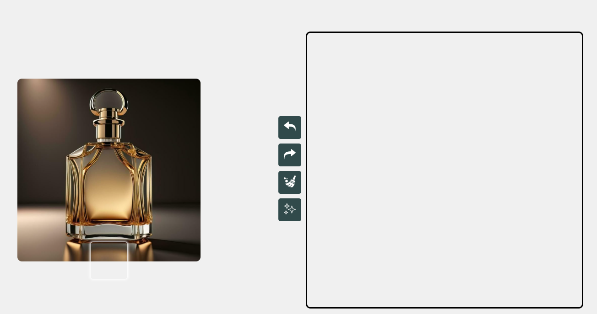

Mes projets
Nom de l’application : Draw Date
Concept
Draw Date est une application de rencontre innovante qui mise sur la créativité et l’intuition plutôt que sur les simples apparences.
Le principe est simple mais original : pour matcher avec quelqu’un, il faut réussir à deviner la description de son dessin.
Ce mécanisme ludique et artistique encourage des interactions plus profondes et plus authentiques.
Fonctionnalités principales
-
Matching par dessin :
Chaque utilisateur crée un dessin représentant une émotion, une idée ou une scène. Les autres doivent deviner correctement sa description parmi plusieurs propositions.
-
Messagerie interactive :
Une fois le match établi, les utilisateurs peuvent discuter par messages textes ou échanger des dessins en direct via un système de dessin partagé (HTML canvas).
-
SuperMatch (Premium) :
Grâce à un abonnement premium via PayPal, les utilisateurs débloquent des fonctionnalités exclusives :
- Forcer un match avec un utilisateur (limité dans le temps ou en nombre)
Public cible
Étudiants, jeunes adultes, artistes ou simplement curieux de vivre une expérience de rencontre différente, plus créative et moins superficielle.
Objectif
Favoriser les connexions sincères et originales en transformant la rencontre en un jeu d’imagination et d’expression personnelle.
Captures et démo

Application de dessin personnalisée pour gravure de luxe – DWS
Contexte
L’entreprise DWS, spécialisée dans la personnalisation de produits de luxe, a développé une application innovante permettant aux clients de créer des designs uniques à la main directement depuis une tablette. Cette application transforme l’expérience client en un moment artistique et exclusif, en liant le geste manuel à la précision technologique.
Fonctionnalité principale
Les utilisateurs peuvent dessiner librement à la main grâce à une interface tactile fluide et intuitive. Une fois le dessin terminé, il est automatiquement converti en fichier SVG vectoriel, parfaitement compatible avec les systèmes de gravure laser haute précision utilisés par DWS.
Objectif
Offrir aux clients une expérience de personnalisation haut de gamme, en leur permettant de graver leurs propres dessins, signatures ou motifs directement sur des objets de luxe : stylos, montres, bijoux, maroquinerie, accessoires, etc.
Fonctionnalités clés
- Interface de dessin tactile optimisée
- Conversion automatique en SVG :
Le moteur graphique convertit les courbes de Bézier et les traits libres en un fichier SVG optimisé pour la gravure vectorielle.
- Prévisualisation en temps réel :
Le client peut voir un rendu simulé du produit final avant la validation, avec un aperçu de la gravure sur le support sélectionné.
- Sauvegarde et envoi automatique :
À la fin du dessin, le fichier SVG est automatiquement enregistré et envoyé à la machine de gravure.
Captures et démo

Jeu en Java – Style Pokémon
Dans le cadre d’un projet personnel, j’ai développé un jeu en Java inspiré de l’univers Pokémon. Ce jeu intègre des mécaniques de combat dans un environnement 2D simple mais fonctionnel.
Objectifs pédagogiques
- Maîtriser les bases et les principes avancés de la programmation orientée objet (POO)
- Mettre en pratique les concepts d’encapsulation, d’héritage et de polymorphisme
- Structurer une application Java en suivant une approche modulaire
- Créer des constructeurs personnalisés pour instancier des objets complexes
Architecture du jeu
- Classe abstraite
Creature : définissant les attributs et comportements de base
- Classes filles comme
Feupet, Aquapet, Herbopet héritant de Creature
- Système de combat basé sur des attaques, types, points de vie et une gestion de tours
Compétences techniques acquises
- Application complète de la POO en Java
- Bonne compréhension de la modularité et du découpage logique du code
- Création de structures évolutives avec des interfaces et classes abstraites
- Utilisation de collections comme
ArrayList pour gérer les créatures du joueur
- Notions de design patterns simples
Captures et démo
Conclusion
Ce projet m’a permis de consolider mes bases en Java tout en développant un jeu complet et fonctionnel. Il m’a donné une vision claire de l’importance de la structure du code, de la réutilisabilité des classes et de la rigueur dans l’organisation d’un projet logiciel.
Gestionnaire de magasin – Application PHP / MySQL
Description
Cette application web développée en PHP permet de gérer efficacement les activités d’un magasin, notamment les produits, les commandes et les utilisateurs.
Toutes les opérations sont basées sur la méthode CRUD (Create, Read, Update, Delete) via une base de données MySQL.
Elle propose également un système d'authentification sécurisée par token, généré automatiquement lors de la connexion.
Fonctionnalités principales
- Gestion des produits : ajout, modification, suppression et consultation de produits en stock
- Gestion des commandes : enregistrement des commandes client et suivi du statut
- Gestion des utilisateurs : création de comptes, suppression, mise à jour des informations
- Système CRUD : chaque entité (produit, commande, utilisateur) est manipulable via une interface et des requêtes SQL sécurisées
- Connexion avec token : à la connexion, l’utilisateur reçoit un
token unique lui permettant d’accéder aux fonctionnalités sans devoir se reconnecter à chaque action
Technologies utilisées
- Langage : PHP (backend)
- Base de données : MySQL
- Sécurité : authentification par token (type JWT simplifié)
- Requêtes SQL paramétrées pour éviter les injections
- Structure MVC légère pour séparer les responsabilités
Objectif
Permettre une gestion centralisée et intuitive des activités commerciales d’un magasin, tout en assurant un haut niveau de sécurité et de maintenabilité grâce à une architecture claire et modulaire.
Captures et démo
Glitch Hunters – Jeu développé lors d'une Game Jam
À l'occasion d'une game jam, j'ai conçu un petit jeu en utilisant le framework Phaser JS.
Le jeu est un mélange d’action et d’arcade, inspiré du classique Space Invaders, avec une touche originale et fantastique.
Concept
Vous incarnez un chat magicien qui lance des sorts pour repousser des vagues de fantômes maléfiques.
Le gameplay repose sur des tirs magiques, des esquives et des niveaux de difficulté croissants dans un univers pixelisé.
Technologies utilisées
- Phaser JS (moteur de jeu HTML5)
- Sprites et animations personnalisées en pixel art
- Sons et musiques intégrés pour une ambiance rétro
Lien vers le jeu
Tu peux tester le jeu ici :
https://dylserker.itch.io/glitch-hunters
Objectif de la jam
Réaliser un jeu complet en un temps limité, en travaillant de manière agile sur les mécaniques de gameplay, les graphismes, et la boucle de jeu.
Captures et démo

Algorithme de plus court chemin – C
Description
Ce projet consiste en un algorithme développé en C permettant de calculer le plus court chemin entre deux nœuds d’un graphe, en prenant en compte les liens (arêtes).
Il met en œuvre des structures de données efficaces et une gestion fine de la mémoire.
Fonctionnalités
- Représentation de graphes avec des structures de nœuds et de pointeurs
- Calcul du plus court chemin entre un nœud de départ et un nœud d’arrivée
- Prise en charge des cas limites : absence de chemin, cycles, graphes non connexes
- Gestion manuelle des erreurs, exceptions et libération de la mémoire (malloc / free)
Compétences acquises
- ✔️ Maîtrise des pointeurs et de la mémoire dynamique
- ✔️ Implémentation et manipulation de graphes (liste d’adjacence, matrices)
- ✔️ Utilisation d’algorithmes classiques
- ✔️ Débogage avancé en C
- ✔️ Robustesse du code grâce à une gestion rigoureuse des cas limites et des erreurs
Objectif
Développer une compréhension approfondie des structures de données bas niveau et des algorithmes de parcours de graphe, tout en renforçant la rigueur en programmation C.
Captures et démo